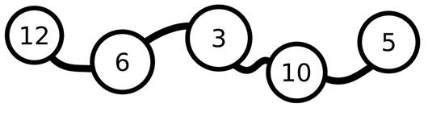

Prev - #38 Random Shuffle | Table of Contents | Next - #40 Merging Two Sorted Lists
collatz(10) → [10, 5, 16, 8, 4, 2, 1]

The Collatz Sequence also called the 3n + 1 problem, is a simple but mysterious numeric sequence that has remained unsolved by mathematicians. It has four rules:
· Begin with a positive, nonzero integer called n.
· If n is 1, the sequence terminates.
· If n is even, the next value of n is n / 2.
· If n is odd, the next value of n is 3n + 1.
For example, if the starting integer is 10, that number is even so the next number is 10 / 2, or 5. 5 is odd, so the next number is 3 × 5 + 1, or 16. 16 is even, so the next number is 8, which is even so the next number is 4, then 2, then 1. At 1, the sequence stops. The entire Collatz Sequence starting at 10 is: 10, 5, 16, 8, 4, 2, 1
Mathematicians have been unable to prove if every starting integer eventually terminates. This gives the Collatz Sequence the description of “the simplest impossible math problem.” However, in this exercise, all you need to do is calculate the sequence of numbers for a given starting integer.
Exercise Description
Write a function named collatz() with
a startingNumber parameter. The function returns a
list of integers of the Collatz sequence that startingNumber
produces. The first integer in this list must be startingNumber
and the last integer must be 1.
Your function should check if startingNumber
is an integer less than 1, and in that case, return an empty list.
These Python assert statements stop
the program if their condition is False. Copy them
to the bottom of your solution program. Your solution is correct if the following
assert statements’ conditions are all True:
assert collatz(0) == []
assert collatz(10) == [10, 5, 16, 8, 4, 2, 1]
assert collatz(11) == [11, 34, 17, 52, 26, 13, 40, 20, 10, 5, 16, 8, 4, 2, 1]
assert collatz(12) == [12, 6, 3, 10, 5, 16, 8, 4, 2, 1]
assert len(collatz(256)) == 9
assert len(collatz(257)) == 123
import random
random.seed(42)
for i in range(1000):
startingNum = random.randint(1, 10000)
seq = collatz(startingNum)
assert seq[0] == startingNum # Make sure it includes the starting number.
assert seq[-1] == 1 # Make sure the last integer is 1.
Try to write a solution based on the information in this description. If you still have trouble solving this exercise, read the Solution Design and Special Cases and Gotchas sections for additional hints.
Prerequisite concepts: lists, while
loops, modulo operator, integer division, append()
Solution Design
The function only needs a variable to keep track of the current
number, which we can call num, and a variable to
hold the sequence of values, which we can call sequence.
At the start of the function, set num to the integer
in startingNumber parameter and sequence
to [num]. We can use a while
loop that continues to loop as long as the num is
not 1. On each iteration of the loop, the next value
for num is calculated based on whether num is currently odd or even. You can use the modulo 2
technique from Exercise #3, “Odd & Even” to determine this: if num % 2 evaluates to 0 then num is even and if it evaluates to 1
then num is odd. After this, append num to the end of the sequence
list.
If num is exactly 1,
then the while loop stops looping and the function
can return sequence.
Special Cases and Gotchas
The only special case is if the startingNumber
parameter is less than 1, in which case there is no sequence and the function
should return an empty list [].
Now try to write a solution based on the information in the previous sections. If you still have trouble solving this exercise, read the Solution Template section for additional hints.
Solution Template
Try to first write a solution from scratch. But if you have difficulty, you can use the following partial program as a starting place. Copy the following code from https://invpy.com/collatzsequence-template.py and paste it into your code editor. Replace the underscores with code to make a working program:
def collatz(startingNumber):
# If the starting number is 0 or negative, return an empty list:
if ____ < 1:
return ____
# Create a list to hold the sequence, beginning with the starting number:
sequence = [____]
num = ____
# Keep looping until the current number is 1:
while num ____ 1:
# If odd, the next number is 3 times the current number plus 1:
if num % 2 == ____:
num = 3 * num + 1
# If even, the next number is half the current number:
else:
num = num // ____
# Record the number in the sequence list:
sequence.append(____)
# Return the sequence of numbers:
return ____
The complete solution for this exercise is given in Appendix A and https://invpy.com/collatzsequence.py. You can view each step of this program as it runs under a debugger at https://invpy.com/collatzsequence-debug/.
Further Reading
You can find out more about the Collatz sequence on Wikipedia at https://en.wikipedia.org/wiki/Collatz_conjecture. There are videos on YouTube about the sequence on the Veritasium channel titled “The Simplest Math Problem No One Can Solve - Collatz Conjecture” at https://youtu.be/094y1Z2wpJg and and the Numberphile channel titled “UNCRACKABLE? The Collatz Conjecture” at https://youtu.be/5mFpVDpKX70.
Prev - #38 Random Shuffle | Table of Contents | Next - #40 Merging Two Sorted Lists